Review your calls
Tell us your team size, current numbers and the problems callers face.
BUSINESS CALLING
A missed call can mean a missed customer. Cloud telephony moves call handling into a hosted system so your business can discuss routing, team access and call management without starting with a large on-site phone setup.
Ask about cloud telephony ↗WHERE IT HELPS
HOW IT WORKS
A simple view of a typical setup.
The exact design is agreed for your service.

LET’S WORK IT OUT
Tell us your team size, current numbers and the problems callers face.
Discuss number availability, routing, supported devices and optional features.
Review the agreed call flow and test how calls reach the team.
BEFORE WE TALK
You don’t need a technical brief. Start with what you know; we can talk through the rest.
QUESTIONS WE CAN HELP WITH
Number migration depends on the number, provider and service availability. Share the details so feasibility can be checked before any change.
Features vary by package. Ask for the specific feature list, usage charges and any recording consent requirements before signing up.
HAS NETWORKS · SHERGARH, MATHURA
Share your location and what you’re trying to do. We’ll discuss availability, scope and a suitable next step.